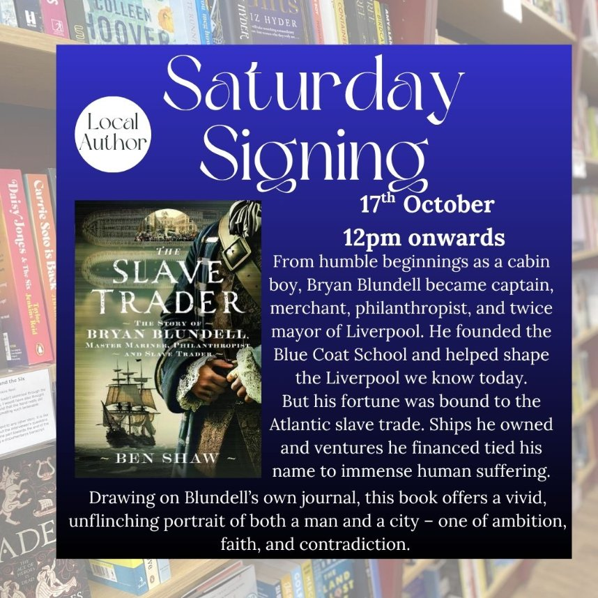
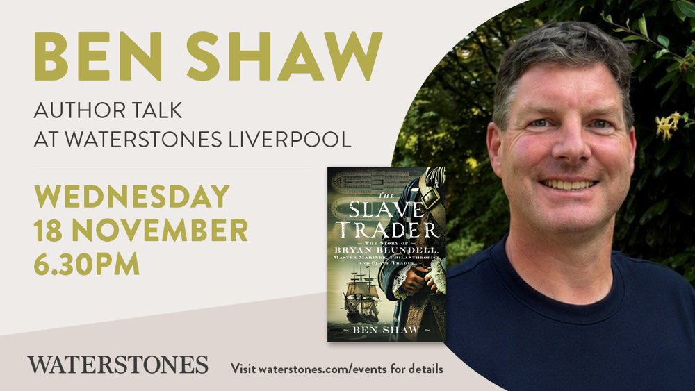
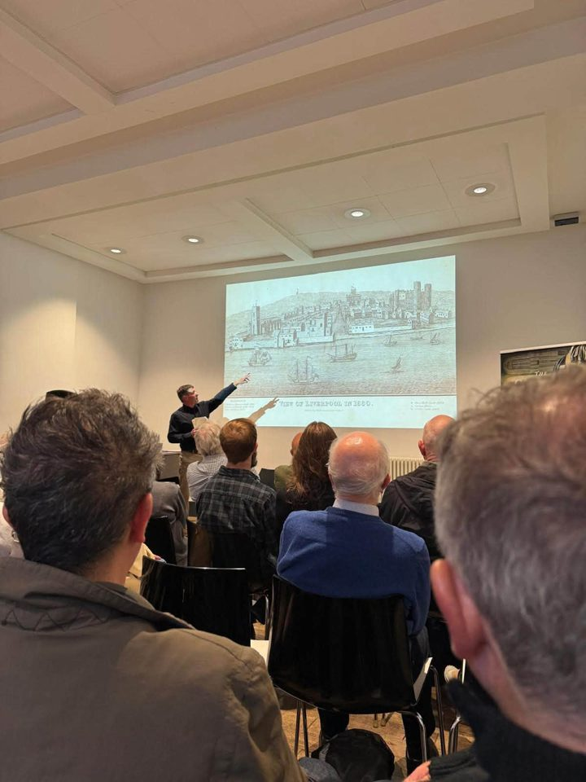
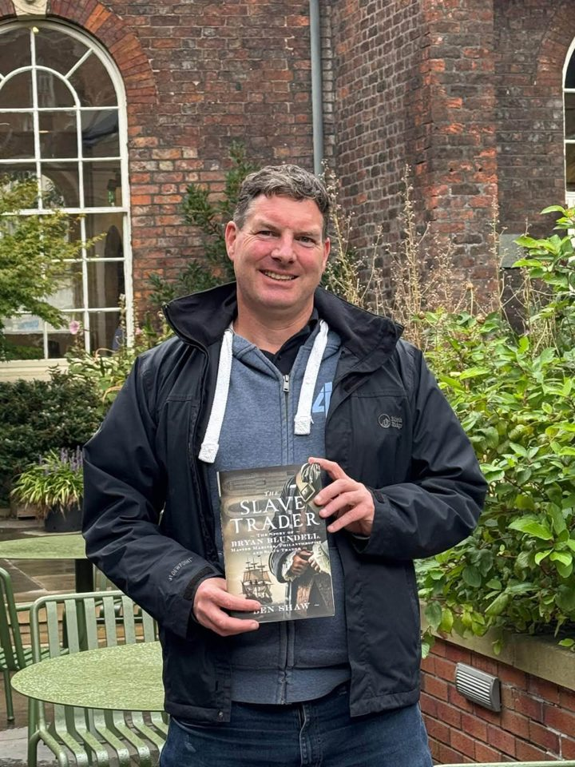
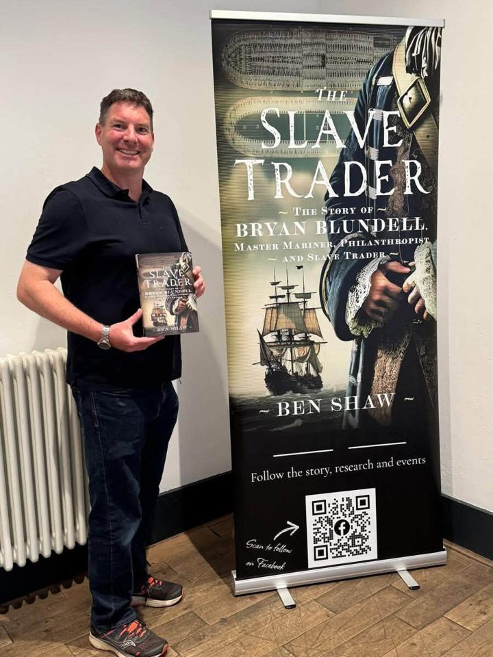
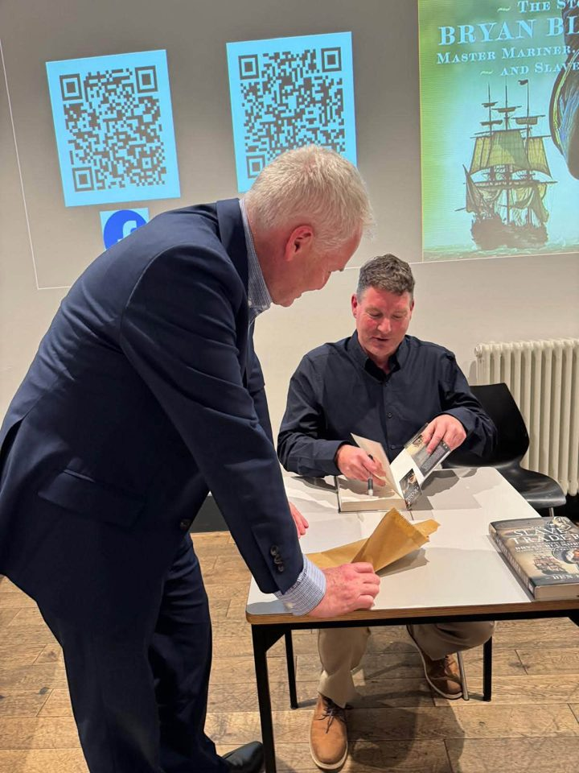
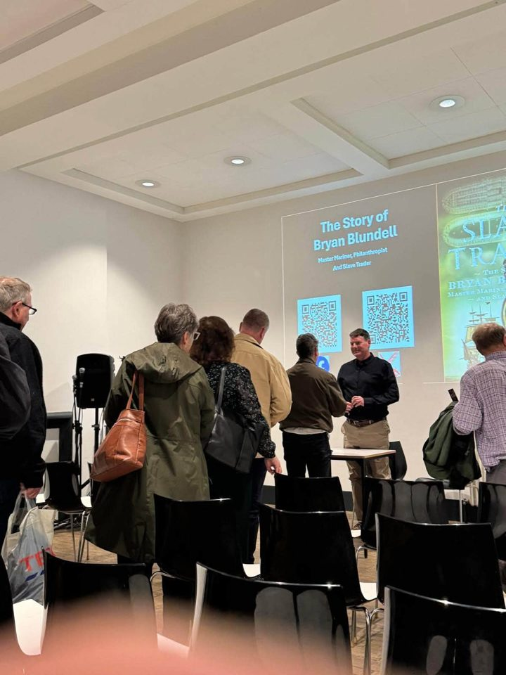

Upcoming Events
Come and hear the story of Bryan Blundell, and get your copy of The Slave Trader signed.
Ben will be signing copies of The Slave Trader at Kenilworth Books, the award-winning independent bookshop on Talisman Square, in the author’s home town. Drop in any time from midday to say hello and pick up a signed copy.

Kenilworth Books, 12 Talisman Square, Kenilworth, Warwickshire CV8 1JB · 01926 855784
Waterstones Liverpool welcomes Ben for a discussion of The Slave Trader and the story of Bryan Blundell, in the city where it all happened. Waterstones Liverpool ONE, 12 College Lane, Liverpool L1 3DS. Tickets from £5.

Ben will be speaking to the Liverpool Maritime Society about The Slave Trader and the story of Bryan Blundell. Further details to be confirmed.
Previous Events
The Slave Trader was launched at the Bluecoat arts centre on School Lane, Liverpool: the very building Bryan Blundell helped to raise as the Blue Coat School, and the oldest building in central Liverpool. There could have been no more fitting place to launch his story.
Held as part of Heritage Open Days, the free event was sold out. Ben gave a talk on Blundell’s life and the research behind the book, and was joined on the panel by Bryan Biggs, Director of Cultural Legacies at the Bluecoat. The evening ended with a book signing.





For event enquiries, or to invite Ben to speak to your book group or historical society, please get in touch.